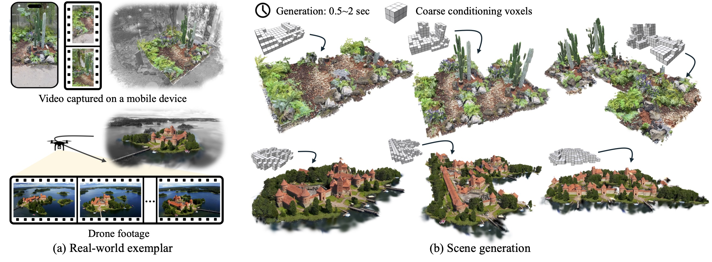
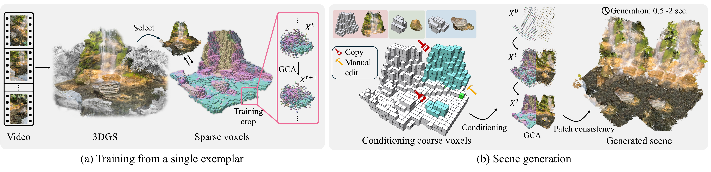
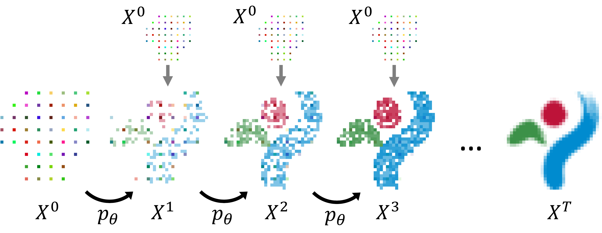
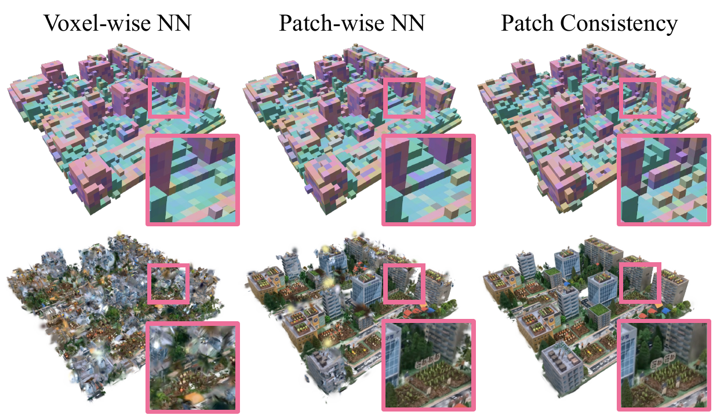
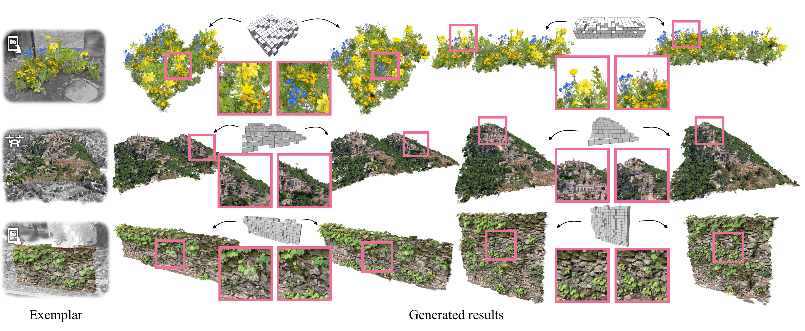

Photorealistic 3D scene generation is challenging due to the scarcity of large-scale, high-quality real-world 3D datasets and complex workflows requiring specialized expertise for manual modeling. These constraints often result in slow iteration cycles, where each modification demands substantial effort, ultimately stifling creativity. We propose a fast, exemplar-driven framework for generating 3D scenes from a single casual input, such as handheld video or drone footage. Our method first leverages 3D Gaussian Splatting (3DGS) to robustly reconstruct input scenes with a high-quality 3D appearance model. We then train a per-scene Generative Cellular Automaton (GCA) to produce a sparse volume of featurized voxels, effectively amortizing scene generation while enabling controllability. A subsequent patch-based remapping step composites the complete scene from the exemplar's initial 3D Gaussian splats, successfully recovering the appearance statistics of the input scene. The entire pipeline can be trained in less than 10 minutes for each exemplar and generates scenes in 0.5-2 seconds. Our method enables interactive creation with full user control, and we showcase complex 3D generation results from real-world exemplars within a self-contained interactive GUI.

Overview of our pipeline. Training phase. (left) From a casual video, an exemplar scene is reconstructed as 3D Gaussians augmented with DINO features. After selecting the region of interest within an interactive editor, the 3D Gaussians are converted into a sparse volume of voxels. A per-scene Generative Cellular Automaton (GCA) is then efficiently trained on random crops of the scenes in under 10 minutes. Generation phase. (right) A set of coarse conditioning voxels, either copied from parts of the exemplar or manually edited, is provided to the pre-trained GCA. The GCA generates a novel sparse volume of featurized voxels. These voxels are then remapped to the exemplar's 3D Gaussians using a sparse patch-based consistency step.

At each time step $t$, GCA samples a new state $X^{t + 1}$ composed of sparse voxel occupancies equipped with features from $p_{\theta}(X^{t+1} | X^t, X^0)$. Recursively applying the transition kernel $p_{\theta}$ to the initial state $X^0$ yields the final generated state $X^T$. We adapt GCA to conditional generation by choosing $X^0$ to be the upsampled coarse set of conditioning voxels and concatenating it to $X^t$ each time $p_\theta$ is applied (gray arrows on the top).

Voxel-wise NN. Naively remapping each predicted voxel to its nearest feature in the exemplar and filling in the corresponding 3D Gaussians fails to produce consistent results due to local consistency and the approximate predictions of GCA. Patch-wise NN. Using the patch-wise distance defined in Equation (3) improves visual coherence but still fails to account for modeling errors. Patch Consistency. We thus propose an additional sparse patch-based consistency operation to refine missing local statistics.

Starting from the exemplar on the left, we generate multiple samples for different conditioning signals. All examples are derived from real-world scenes obtained from casual mobile footage (rows 1, 3) or a drone (row 2).
@misc{excellgen,
title={ExCellGen: Fast, Controllable, Photorealistic 3D Scene Generation from a Single Real-World Exemplar},
author={Clément Jambon and Changwoon Choi and Dongsu Zhang and Olga Sorkine-Hornung and Young Min Kim},
year={2026},
eprint={2412.16253},
archivePrefix={arXiv},
primaryClass={cs.CV},
url={https://arxiv.org/abs/2412.16253},
}